2014/11/23 長野リンゴ狩りオフミ
ともパパさんによるリンゴオフです＾＾
信州中野ＩＣ前のコンビニに集まるＥ３４たち！ 今回も全国各地（？）からの集合だ！
Ｍゴローの所からだと、500kmはあるだろうか。 さすがに遠い（笑
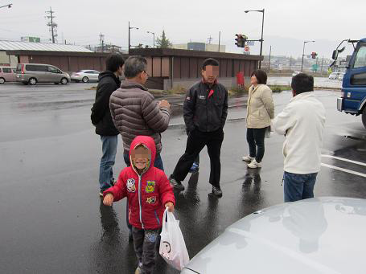
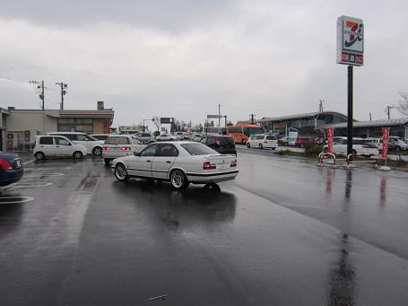
集合場所で出迎えてくれたともパパJr＾＾ そこに集まってくるＥ３４！
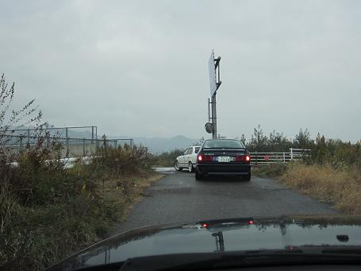
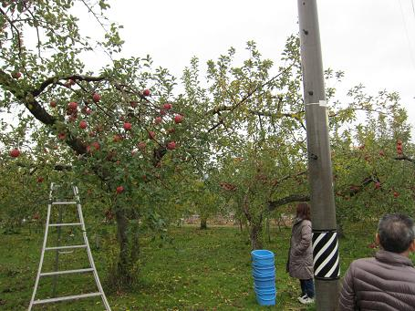
全員集合したところで・・・・ ともパパさんのリンゴ畑まで移動です！
そこには一面リンゴの木が！
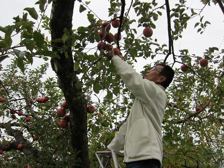
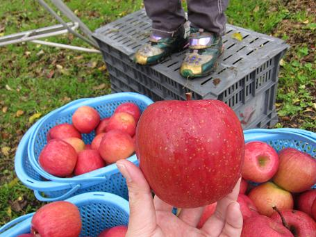
リンゴの取り方を教わって、さぁ収穫＾＾
どれも立派なリンゴばかり！ 見た目だけじゃなく、蜜の入り方が尋常じゃありません＾＾！
リンゴの1/3は蜜で占められているものもあった！ お世辞抜きに美味しいリンゴだ！
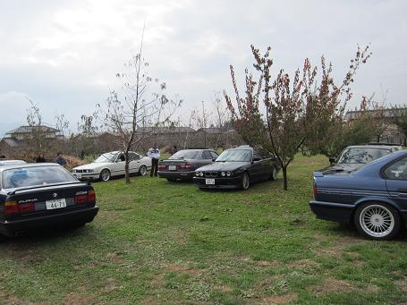
思う存分リンゴを狩った後は、ともパパ邸に移動です！
どこまでが庭か分からない程の広大な庭に車を置かせていただいて・・・（笑 ４台に分乗して昼食へＧＯ＾＾
この光景を見て、ともパパさんの奥さんが言った一言・・・・
「わぁ！夢のような光景」
なんて理解のある良い奥さんなんだ！（笑
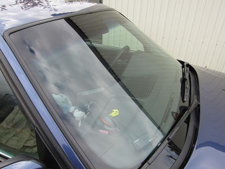
こちらは富山のヴァンプＤ号！ フロントガラスを断熱ガラスに交換しての参加だ！
ガラス上部のボカシが異常に長い！ ヤンキー仕様だそうだ（爆
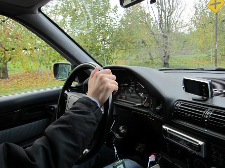
ＡＴ故障で長期入院していた“めたぼー号”の助手席に乗せてもらった。トランスファーが一体式のＡＬＬＲＯＡＤだけあってＡＴの調達に苦労したそうだ。
オーナー曰く、まだ完調ではないそうだが、とても滑らかなフィールだった。
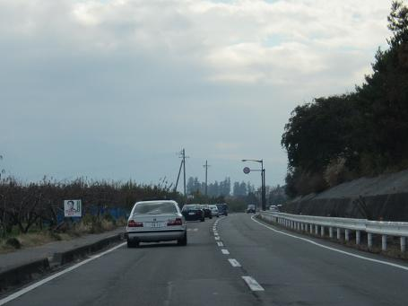
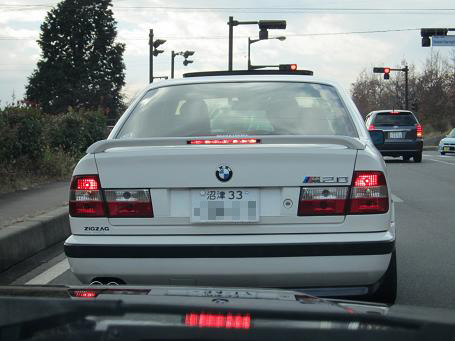
ともパパ号、ヴァンプＤ号、タケ号、めたぼー号の４台で移動です！
あ！タケ号のスポイラーのブレーキランプが点いてる＾＾！ この時は点かなかったのに（笑
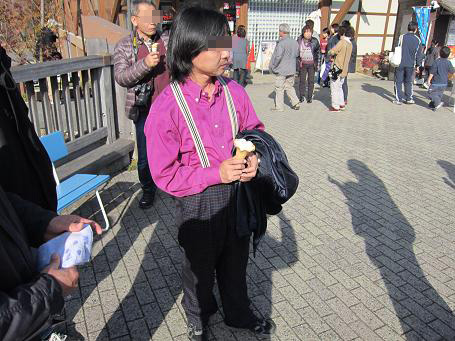
派手なシャツを着ているこのお方＾＾ 大道芸人じゃありません！medama1goさんです（笑
Ｅ３４は不調だそうで・・・ 今回は奥さんの運転でＥ３６で参加だ＾＾
何で奥さんの運転かって？ あまり触れないことにしておこう（爆
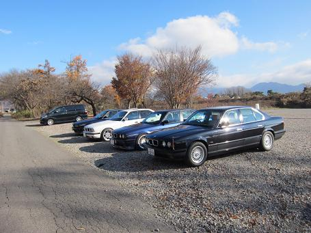
いや～やっぱりカッコイイですね～！これぞＢＭＷ！
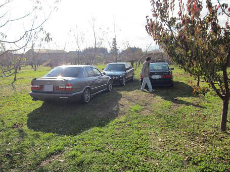
またともパパ邸に戻ってしばしウダウダ＾＾ 今回は全て違うグレードのＥ３４が集まった。
５２５はＭ２０、Ｍ５０の前期と後期/５３０/535/B10ALLROAD/B10 4.0
さて、名残惜しいものの、また５００kmの道程を帰らないといけません。
明るいうちに出発です！
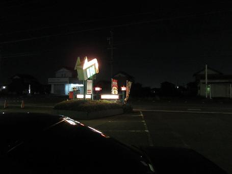
しか～し！高速道路の２０kmの渋滞に戦意喪失・・・（笑途中にあった健康ランドで汗を流して、営業しているのか良く分からない喫茶店で時間を潰して帰宅した。
前日は松本市内に宿泊していたのだが、まさかの大地震でどうなるかと思ったが、何事も無く終わって良かった。
今回、ともパパさんには大変お世話になった！ありがとうございましたm(__)m